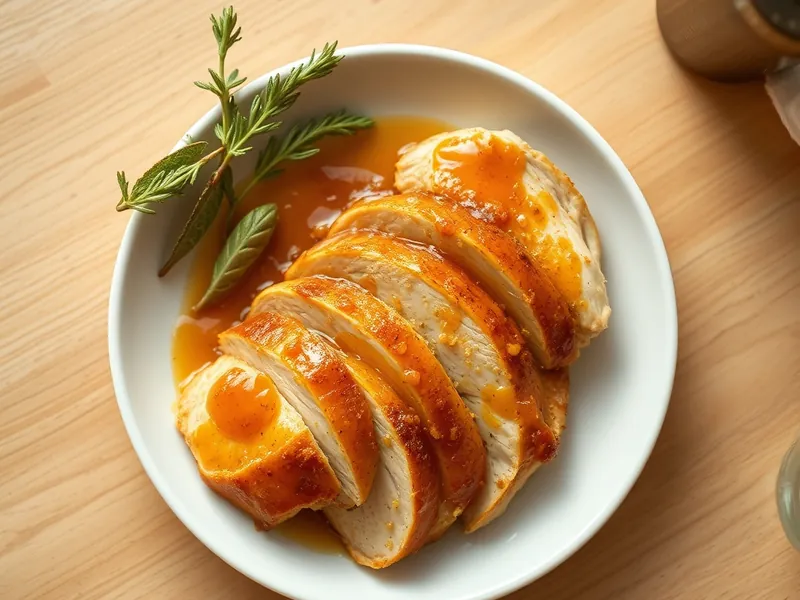

Куриное филе в медово-горчичном соусе в духовке
Филе, запечённое в глазури из мёда, горчицы и соевого соуса
30 мин3 порц.329 ккал на порциюБ 49 · Ж 10 · У 11Европейская кухня
Открыть в приложении: порции, таймеры, список покупок
Продукты на 3 порц.
- Куриное филе600 г
- Мёд1 ст. л.
- Горчица1,5 ст. л.
- Соевый соус1,5 ст. л.
- Чеснок2 зуб.
- Растительное масло1 ст. л.
- Перец чёрный молотый2 щеп.
Как готовить
- Включите духовку на 200 °C (сильный жар). Смешайте мёд, горчицу, соевый соус, масло, выдавленный чеснок и перец. Это 3 минуты.
- Если филе толстое, разрежьте его вдоль пополам, чтобы толщина была не больше 2 см.
- Обмажьте филе соусом со всех сторон и выложите в форму, остатки соуса вылейте сверху.
- Запекайте 18-20 минут, через 10 минут полейте курицу соком из формы.
- Готово, когда сверху глянцевая карамельная корочка, а в толстом месте сок прозрачный. Дайте полежать 3 минуты и нарежьте.
Совет. Соль не нужна: её хватает в соевом соусе. Если корочка темнеет слишком быстро, накройте форму фольгой.